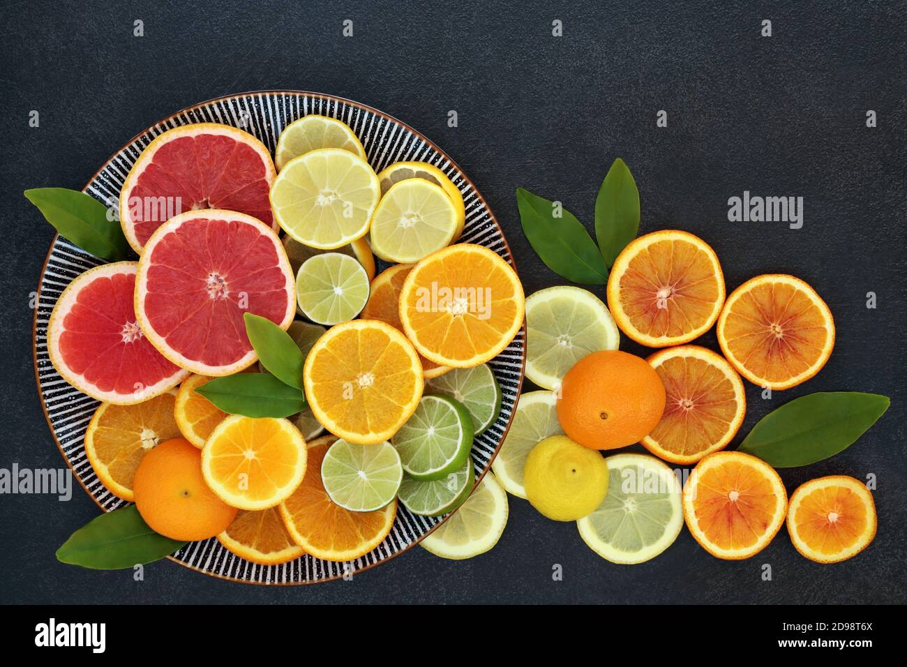

Agrum Solis - Sustainable Agriculture in Puglia
30 acres of citrus groves and sustainable farming in Brindisi, Puglia
Discover Our LandAgricultural Heritage in Brindisi
Agrum Solis is an agricultural company based in Brindisi, Puglia, specializing in sustainable farming of citrus fruits and various trees. We operate across 30 acres of Mediterranean agricultural land, committed to traditional farming methods combined with modern sustainability practices.
Our farm represents the authentic spirit of Puglia's agricultural heritage, where centuries-old traditions meet contemporary environmental responsibility. We focus on producing high-quality citrus fruits while preserving the natural beauty and ecological balance of our Mediterranean landscape.
Located in the heart of one of Italy's most fertile agricultural regions, we are dedicated to maintaining the traditional practices that have made Puglia famous for its exceptional agricultural products, while embracing innovative approaches to sustainable farming.

Mediterranean Climate Excellence

Located in the northeastern part of Puglia, our farm sits in the renowned Brindisi Plain, characterized by predominantly flat, fertile, and well-drained agricultural land. This unique geographic position provides the ideal Mediterranean climate for citrus cultivation.
The region's agricultural distribution reflects its exceptional growing conditions, with cereals covering 29% of the agricultural area, olive cultivation at 27%, temporary forage crops at 17%, and citrus farming maintaining a significant presence throughout the landscape.
Our traditional orchards, many approximately 70 years old, feature picturesque landscapes with orange and lemon groves that have been carefully maintained as part of Italy's significant citrus production network. Many of our trees are grafted onto bitter orange rootstocks, following time-honored Mediterranean agricultural practices.
Our Commitment to Quality
High-Quality Products
We focus on producing exceptional citrus fruits and agricultural products that reflect the authentic flavors and quality of the Mediterranean region. Our commitment to quality over quantity ensures that every product meets the highest standards.
Sustainable Practices
Environmental responsibility is at the core of our operations. We implement sustainable farming practices and regenerative agriculture techniques that protect and enhance our natural ecosystem while producing superior agricultural products.
Agricultural Heritage
We are dedicated to preserving centuries-old agricultural traditions that have shaped Puglia's farming landscape. Our methods honor the wisdom of traditional peasant farming while incorporating modern sustainability innovations.
Educational Tourism
We offer educational opportunities and agricultural tourism experiences that allow visitors to learn about sustainable farming practices, traditional Mediterranean agriculture, and the rich cultural heritage of Puglia's farming communities.